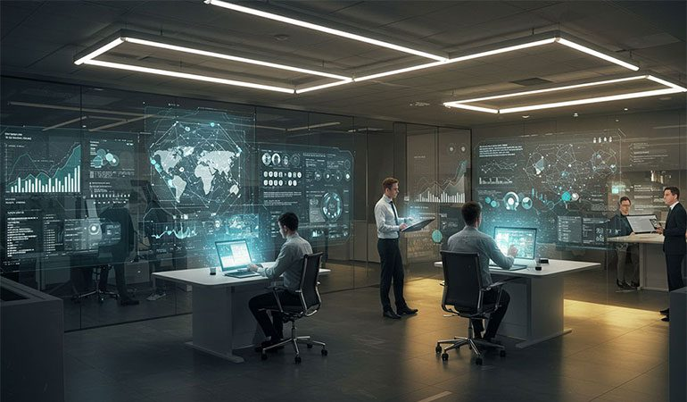
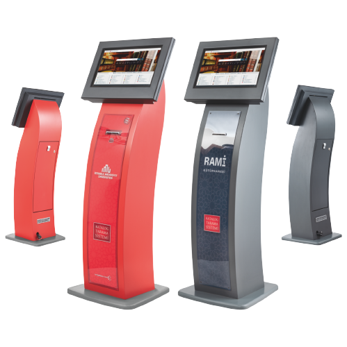
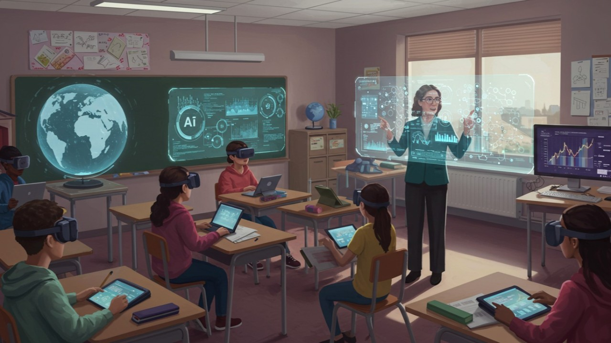
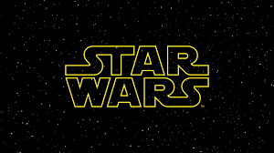

Projelerim ve Başarılarım
Yapay zeka, teknoloji ve kültür üzerine odaklanan çalışmalarım.
Görmek için lütfen yatayda kaydırın.

Yapay Zeka Araştırma Laboratuvarı
Projemizin deneysel aşaması için yüksek hızlı internet erişimine sahip bilgisayar laboratuvarını ana araştırma tesisi olarak belirledik. Bu laboratuvar, katılımcı öğrencilerin kontrollü bir ortamda üretken yapay zeka araçlarıyla etkileşime girmesine olanak tanıyacak. Bu altyapıyı kullanmanın temel amacı, öğrencilerin harekete dayalı illüstrasyon görevlerini verimli bir şekilde ve hazır teknik destekle tamamlamalarına olanak tanımak olacaktır.

Kütüphaneler için YZ Kioskları
Kütüphanelere, (ChatGPT, Gemini, Midjourney vb.) tam lisanslı yapay zeka araçlarıyla donatılmış, dokunmatik ekranlı kiosk alanları inşa etmek. Bu sistemler, programlanmış büyük ekranlar üzerinden çalışacak ve kurumsal paketler kullanacaktır. Kütüphanelere yapay zeka araçlarını kullanabilmek için dokunmatik ekranlı sistemlerin olduğu bir alan inşa etmek. Kitaplar artık kütüphanelerde sadece kokularını duyumlamak için süs olarak bulunuyor. Bu sistem içerisinde çeşitli yapay zeka modelleri (chatGPT, Grok, Gemini, Midjourney, Dall-e vb) bulunacak. Herbir yapay zeka aracının full paketi satın alınmış olacak. 10 tane bu şekilde sistem olsa bir kurumsal full paket üzerinden hepsi kullanılabilecek. Bir bilgisayar vasıtası ile olmayacak sadece programlanmış dokunmatik büyük ekranlarda gerçekleşecek.

Etkileşimli Üretken Yapay Zeka (Inter-Generative AI)
İki (veya daha fazla) YZ modelinin (örn: GPT ve Claude) bir bilgiyi (örn: PDF çevirisi) üçüncü bir platformda işlemesi. Bu, "Bağıl YZ" (modellerin birbirine geri bildirim vermesi) veya "Manuel Seçim" (kullanıcının en iyi sonucu seçmesi) şeklinde olabilir. 2 farklı yapay zekanın (örn gpt ve claud) 3. bir platform aracılığında bir bilgiyi (örn pdf çevirici) aynı anda işlemesi süreci Uygulanırken İki AI aynı anda ancak birbirlerinden bağımsız işleme yaparsa BAĞIL AIs = İki ya da daha fazla AI aynı anda ancak birbirlerine feedback vererek yapılırsa (burada 3. bir AI ortak kararda buluşturmalı) Sonuç verirken İki AI sonucu da verilir, kullanıcı manuel seçim yapar İki veya daha fazla AI sonucu tek bir çıktı verir Bunlar yapay zekaların etkileşimli generativeleşmesidir. Yüksek AI modelinin düşük olan ile karşılaştırılması Bu karşılaştırma aynı input karşılığındaki outputlara bakar. Aradaki output yönünden gelişmişlik farkını ölçme aracına "different perspectives in AIs" (DPAIs)

Makale: Star Wars ve Günümüz Teknolojisi
Star Wars sinematik evreninin, günümüz teknolojisindeki robotik, yapay zeka ve uzay araştırmaları gibi alanlara nasıl ilham verdiğini analiz eden bir makale. Sanat ve popüler kültürün teknolojik inovasyon üzerindeki simbiyotik ilişkisini inceler. Sanat ve teknoloji, tarih boyunca birbirini besleyen ve dönüştüren iki temel unsur olmuştur. Özellikle popüler kültür ürünlerinin teknolojik inovasyonların yönünü belirlemede önemli bir rol oynadığı gerçeği göz ardı edilemeyecek derecededir. Bu çalışma, bilimkurgu sinemasının kült yapımı haline gelmiş George Lucas'ın Star Wars sinematik evreninin beyaz perdeden günümüzün teknolojisine nasıl ulaşıp yön verdiğini ele almayı amaçlamaktadır. Star Wars serisinin robotik, yapay zekâ, uzay araştırmaları ve iletişim sistemleri gibi pek çok alandaki teknolojik gelişime doğrudan veya dolaylı bir şekilde göstermiş olduğu ilham verici etkisi literatür ve örnek çalışmalar ışığında analiz edilecektir.